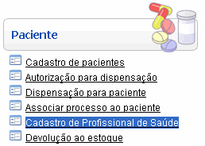
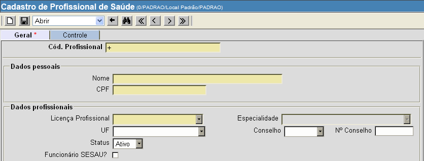

Cadastro de Profissionais de Saúde [ Voltar ]Utilize este formulário para cadastrar no sistema os profissionais de saúde da Secretaria. O formulário "Cadastro de Profissionais de Saúde" encontra-se dentro do menu "Paciente". 
Ao clicar no nome do formulário, o sistema exibirá a seguinte tela: 
Siga os passos abaixo: 1º Passo: informe os dados do profissional que deseja cadastrar. Os campos em amarelo são obrigatórios.Observação: o campo "Cód. Profissional" apresenta um sinal de mais "+" por padrão. Desta forma, assim que a cadastro é salvo, o sistema lhe atribui o próximo número disponível. 2°
Passo: clique no botão |
 para
concluir o cadastro.
para
concluir o cadastro.